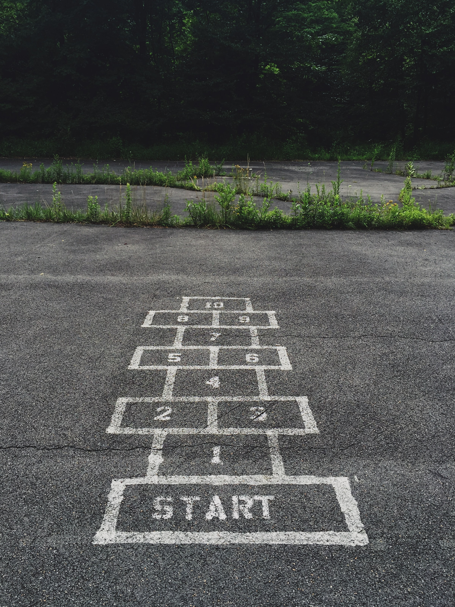

Everything ongoing about Research Data Management and Depositar
Tutorial
Select the tutorial which fits your type of use.

Start with our tutorial
Depositar Tutorial
Start with our tutorial
Depositar Tutorial
Cases
What will it cost to manage and share my data?
A visionary man of steadfast integrity, he demonstrated unusual leadership and a staunch commitment to values. In the business world, he was known for his commitment to excellence and creating a culture of peerless integrity.